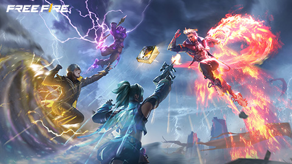
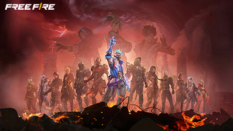

Free Fire Game Universe
What is Free Fire?

Free Fire is a highly popular battle royale mobile game developed and published by Garena, which has captured the attention of millions of players around the world. The game is known for its fast-paced gameplay, easy-to-learn mechanics, and exciting survival challenges, making it a favorite especially among mobile gamers in regions like India, Southeast Asia, and Latin America.
In Free Fire, up to 50 players are air-dropped onto a remote island where they must search for weapons, armor, and resources to survive. Once landed, players quickly begin to loot buildings, explore the map, and engage in battles with opponents. The key objective is simple but intense: be the last person (or team) standing.
What makes Free Fire unique is its short match duration, typically around 10 minutes. This makes it ideal for quick gaming sessions without sacrificing the thrill of a full-scale battle. As time progresses, the safe zone on the island shrinks, forcing players into tighter areas and increasing the intensity of encounters. This adds to the suspense and strategy, pushing players to think fast and act smart.
Players can choose from a variety of characters, each with unique abilities that can give them an edge in combat. The game also includes various modes, such as solo, duo, squad, and special event modes, keeping the gameplay fresh and engaging.
Additionally, Free Fire offers a rich customization system, allowing players to unlock and equip different skins, outfits, pets, emotes, and weapons, which adds a layer of personalization to the game. Regular updates bring new characters, events, maps, and collaborations, keeping the community active and excited.
Overall, Garena Free Fire is more than just a shooting game – it's a dynamic, social, and action-packed experience that appeals to both casual and competitive players alike.
Game Modes

Free Fire offers a variety of exciting game modes, each tailored to provide a unique and enjoyable experience for players of different skill levels and preferences. These modes keep the gameplay fresh, fast-paced, and engaging:
Classic Battle Royale:
This is the core mode of Free Fire. In this mode, 50 players parachute onto a large island and battle it out until only one player or team remains. Players must gather weapons, armor, and resources, while staying inside a shrinking safe zone. Strategy, survival, and quick reflexes are key to winning.
Clash Squad (4v4):
A team-based mode where two squads of four players each face off in short, intense rounds. Players buy weapons and gear before each round using in-game currency earned during the match. It’s perfect for those who enjoy team coordination and fast, action-packed combat.
Lone Wolf Mode:
This mode is designed for 1v1 duels or 2v2 fights in a smaller arena. It emphasizes individual skill, precision, and fast decision-making. Lone Wolf offers a great way for players to practice and showcase their combat abilities in close encounters.
Limited-Time Event Modes:
Free Fire frequently introduces special modes during in-game events, festivals, or collaborations (like those with anime or movies). These modes often include unique rules, fun mechanics, or themed gameplay such as zombie survival, racing, or snowball fights. They keep the game exciting and unpredictable.
Each of these modes brings its own challenges and thrills, allowing players to switch up their playstyle, team up with friends, or compete solo in different formats. Whether you're looking for strategic survival, high-speed gunfights, or casual fun, Free Fire has something for everyone.
Events and Rewards

Free Fire is well-known for its exciting in-game events, which play a major role in keeping the game lively and entertaining for players around the world. These events are regularly introduced and often coincide with global celebrations, regional festivals, game milestones, or special collaborations.
During these events, players have the opportunity to unlock exclusive rewards such as:
- Character outfits and fashionable costumes
- Weapon skins with special effects
- Unique emotes that let players express themselves
- Pets with abilities
- And in-game currencies like diamonds, gold, and event tokens
Many events are time-limited and include special missions or challenges that players can complete to earn these items for free or at discounted rates.
What makes Free Fire events even more exciting is their frequent collaborations with global celebrities, sports stars, musicians, anime, or movie franchises. Past events have featured icons like Cristiano Ronaldo (Chrono), BTS, Money Heist, and even anime like One Punch Man and Attack on Titan. These partnerships bring themed content, game modes, and story-driven experiences into the game.
These collaborations not only attract fans from different communities but also give players a chance to collect limited-edition cosmetics that may never return, making them highly sought-after.
In short, Free Fire’s event system is a core part of the game's appeal, offering fresh content, creative themes, and plenty of rewards that encourage players to log in and enjoy new adventures regularly.
Free Fire Characters

One of the most exciting features of Free Fire is its wide roster of playable characters, each with unique abilities that can give players a tactical advantage in battle. These characters aren't just cosmetic — they come with special skills that cater to different playstyles and strategies, making the game more dynamic and customizable.
🔹 Types of Character Abilities
Healing Abilities:
Some characters, like Dimitri or Alok, can restore health to themselves and teammates during combat, making them ideal for support roles and squad matches.
Speed & Sprint Boosts:
Characters like Kelly and Joseph have abilities that increase movement speed, allowing players to dodge bullets, escape danger, or rush enemies faster.
Defensive Shields:
Characters such as Chrono have skills that generate protective barriers, blocking incoming damage and giving players a chance to heal or counterattack.
Stealth, Detection & Combat Skills:
Some characters have passive abilities that help detect enemies (like Moco, who tags enemies), improve accuracy, or reduce damage taken — perfect for aggressive or tactical players.
🔹 Customization & Strategy
Free Fire allows players to choose and level up characters, enhancing their skills as they progress. Players can also equip up to four skills at once (one active and three passive), mixing and matching different characters' abilities to build the perfect setup for their playstyle — whether it’s rush, sniping, healing, or survival.
With dozens of characters available — including real-life inspired ones from collaborations — every match can feel unique, and no two players are exactly alike.
Main Free Fire Characters
| Character | Ability |
|---|
| DJ Alok | Healing + Movement Speed Buff |
| Chrono | Creates a damage-blocking force field |
| Skyler | Destroys gloo walls & heals when placing them |
| K (Captain Booyah) | EP recovery and conversion |
| Hayato | Armor penetration increases when HP is low |
| Kelly | Boosts sprint speed |
| Wukong | Transforms into a bush (camouflage) |
| Dasha | Reduces fall damage & recovery time |
| Jota | Recovers HP when using guns |
| Steffie | Creates a graffiti that reduces explosive damage |